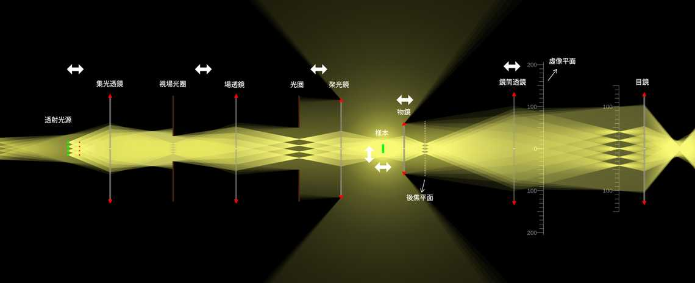

貢獻者：Ze-Yang Li
本互動式場景展示了一台現代的，採用無限遠校正的透射式光學顯微鏡的光學配置，包括主要的照明與成像光路，並呈現樣本的放大、科勒照明、可調式光圈、無限遠校正物鏡，以及形成中間像的相應鏡筒透鏡。場景也說明顯微鏡光學中的兩組基本共軛平面：視場共軛平面（視場光圈 → 樣本 → 中間像）與孔徑共軛平面（光源 → 聚光鏡孔徑 → 物鏡後焦平面）；在這個場景中，可以透過像點的數量區分。使用者可以移動元件或調整光圈，觀察各元件如何影響照明與成像。請注意，為了著重呈現其基本光學原理，本模擬中的所有元件皆為無像差的理想透鏡，刻意省略真實顯微鏡元件的詳細光學設計與像差校正。
